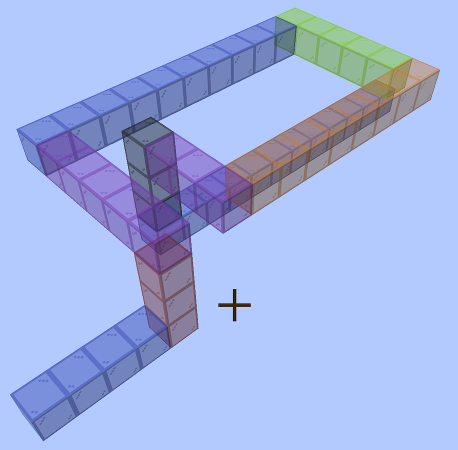

The coiled trumpet
A trumpet bore that coils flat and then drops out of its own plane, twice. 59 blocks, 944mm of centreline, eight sections, no elbows and no contact. It is a candidate, not an object: the walk is gated, the sheets are drawn, and nothing here has been glued into a tube.
Turn it → The viewer is a page of its own, not a frame in this one: drag to rotate, and the slider reveals the bore a block at a time in the order you would glue it.

The walk is the whole design
N N2 U6 W5 N10 E5 D3 S8 W3 D3 N13The first letter is the way you face at the mouth; every term after it turns where you stand and then travels that many blocks. So the bore is 1 + the sum of the numbers — 58 + 1 = 59. Axes are Minecraft's: U/D are +Y/−Y, N is −Z, S is +Z, E is +X, W is −X.
The walk is stored in the viewer page, in a <div class="walk">, which makes that page the complete record of the design — the cut files regenerate from it and from nothing else. Read it out of the file rather than from here.
The per-design note beside the cut files quoted
N N3 U6 W5 N10 E5 D3 S8 W3 D3 N12 Nuntil 2026-09-13. That walk is also 59 blocks, so the count never disagreed, but it draws a different tube: its first section isBDDDRwhere the shipped sheet isBDDR, and its last is fourteen blocks where the shipped sheet is fifteen. The page and the sheets agree with each other; the note did not, and has been corrected.
The numbers
| blocks | 59 |
| centreline | 944mm |
| sections | 8 |
| parts | 50, over 8 sheets |
| bounding box | 96 × 112 × 288mm — 6 × 7 × 18 blocks |
| airway | 10mm square, constant |
| block pitch | 16mm — 10mm of air in 3mm walls |
| elbows | none |
| contact | none |
| legs | north 26, south 8, west 8, up 6, down 6, east 5 |
A block is 16mm, not 10. Ten millimetres of sound space wrapped in 3mm of wall is 16mm on the outside, and coring it for air does not shrink it. A run of N blocks is 16N mm along the bore, which is where 944 comes from.
Why it drops
A turn is free when one piece can carry it internally, which needs a straight block either side that the neighbouring piece has not already claimed. Checked over every window of three consecutive terms: a step (two outer legs on the same axis, same direction) needs a middle of 1, a hairpin (same axis, opposed) needs 2, and a coil (three different axes) needs 3. Every window here clears it, so nothing is stranded as a one-block elbow.
The drop costs sections, not elbows. The mid-coil D3 splits what would otherwise be one flat spiral into four pieces. The bore is elbow-free either way — it is the section count that moves, eight here against five for a walk that stays in plane, and a section is a glue joint you have to get square.
The eight sections
Numbered from the mouthpiece; assemble in order. A section is one flat snake, so it is one SVG, and every part on it is engraved with its section number because the sections only go together one way.
| # | blocks | in → out | plate | shape | parts | sheet |
|---|---|---|---|---|---|---|
| 1 | 1–4 | N → U | 2×3 | BDDR~a | 6 | 273 × 72mm |
| 2 | 5–10 | U → W | 2×5 | BUUUUL | 6 | 343 × 107mm |
| 3 | 11–25 | W → E | 4×11 | BLLLDDDDDDDDDDR | 8 | 541 × 226mm |
| 4 | 26–30 | E → D | 4×2 | BRRRD | 6 | 381 × 56mm |
| 5 | 31–33 | D → S | 2×2 | BLU | 6 | 253 × 56mm |
| 6 | 34–41 | S → W | 2×7 | BUUUUUUL | 6 | 407 × 139mm |
| 7 | 42–44 | W → D | 2×2 | BLD | 6 | 253 × 56mm |
| 8 | 45–59 | D → N | 2×14 | BLDDDDDDDDDDDDD~b | 6 | 403 × 274mm |
~a and ~b are the plain ends — the only two faces on the whole bore that do not couple to another section, and the ones the mouthpiece and the bell land on. The filenames say buttin and buttout.
Section 3 is the biggest sheet at 541 × 226mm, well inside the 600mm bed.
The cut files
In ../parts/bore/concept/walk/no-elbows/coil/no-contact/flat-drop/bore/cut-files/:
bore10-coil-flat-drop-01of08-bend-DDR-buttin-cut-files.svg
bore10-coil-flat-drop-02of08-bend-UUUUL-cut-files.svg
bore10-coil-flat-drop-03of08-bend-LLLDDDDDDDDDDR-cut-files.svg
bore10-coil-flat-drop-04of08-bend-RRRD-cut-files.svg
bore10-coil-flat-drop-05of08-bend-LU-cut-files.svg
bore10-coil-flat-drop-06of08-bend-UUUUUUL-cut-files.svg
bore10-coil-flat-drop-07of08-bend-LD-cut-files.svg
bore10-coil-flat-drop-08of08-bend-LDDDDDDDDDDDDD-buttout-cut-files.svgEvery file is millimetre-true at 1 user unit = 1mm. Blue engraves, then black cuts — blue writes the section number on every part, black frees it.

Rebuild it
The generator lives in ../tools. Report only, writing nothing:
python3 tools/bore_split.py "N N2 U6 W5 N10 E5 D3 S8 W3 D3 N13" --bore=10 --no-write--bore=10 is the airway; the 16mm block follows from it at 3mm ply. Add --refuse-elbows and the walk still passes. Writing rewrites every sheet in the folder, so it runs under the venv python that has the gate's dependencies:
cd tools && ~/Software/boxes/venv/bin/python bore_split.py \
../parts/bore/concept/walk/no-elbows/coil/no-contact/flat-drop/bore/bore.html \
--write ../parts/bore/concept/walk/no-elbows/coil/no-contact/flat-drop/bore--write runs the full gate itself and prints the tally, so a regenerated folder has been checked rather than merely written.
The two ends
Only the tube belongs to an instrument. The mouthpiece and the bell are neither of them touched by the way a bore turns, and every bore in this repository is on the same 10mm channel, so one of each serves all of them — the bell and the mouthpiece.
More, and licence
The three-turn trumpet — the bore that exists as an object, glued up and blown, rather than a candidate.
The trumpet writeup — the idea, the notation, the gate, and the whole library.
The rest of the build files — every instrument, each with its own writeup.
Released under CC0 1.0.